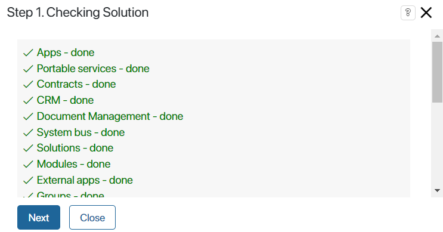
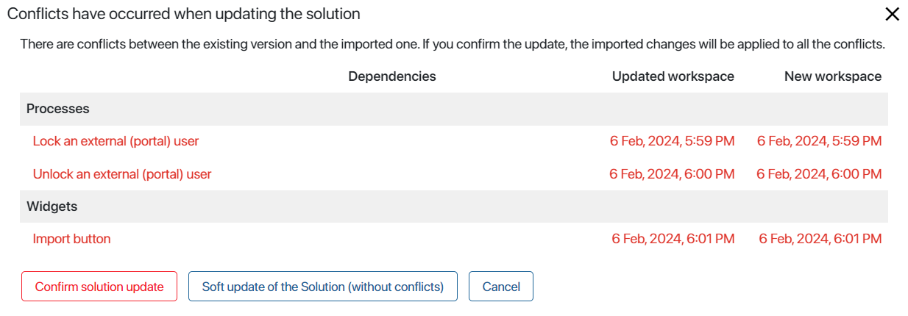
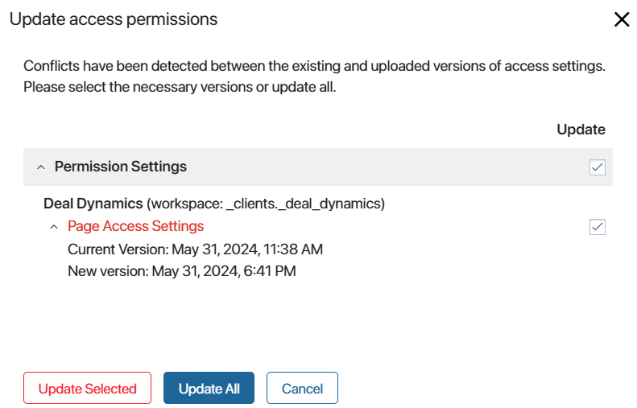
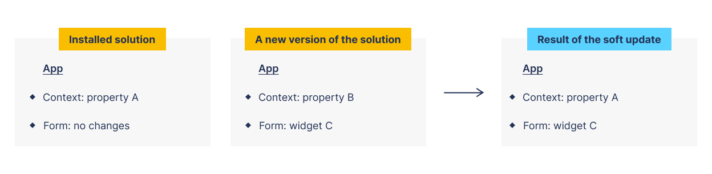
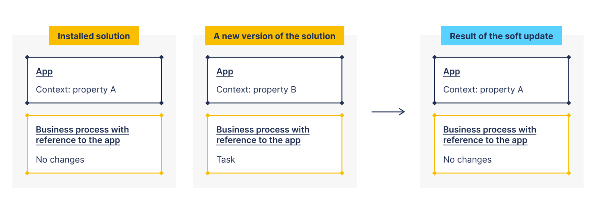
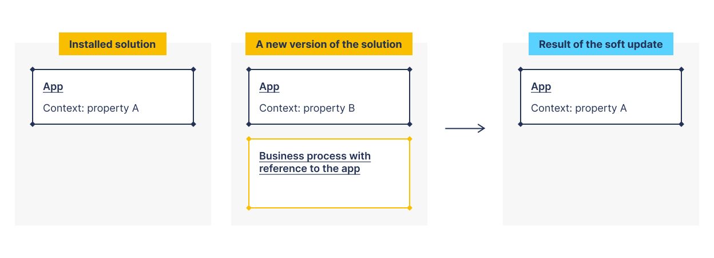
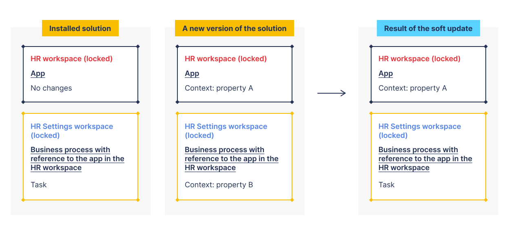

The feature is used to import changes to an already installed solution. If you have edited components of the solution, you can update it in two ways:
- Install the fully updated version without saving your customizations.
- Select the soft update option. Then the components that have been changed will not be updated. Components whose settings you did not change will be updated.
The original or updated version of a solution may include new components such as additional workspaces, apps, or modules.
To ensure the integrity of the solution, we do not recommend removing components from it. This can lead to inconsistency of workspaces, optional dependencies, and links in structures within the solution. For example, workspace duplication may occur after an update. Because of integrity issues, errors may occur during its further export, import, and update processes.
If you need to delete a workspace or a module from the solution, consider the following:
- Before deleting, check if the solution has internal to the workspace or module to be deleted.
- Consider the effect of the deletion on the created optional dependencies from other solutions.
- If you need to re-add a workspace or module to the solution, we recommend that you do not delete these components and instead hide the workspace from the left menu or disable the module.
Update start
To perform an update:
- Proceed in one of the two ways:
- If the solution was imported from BRIX Store, you can update it by re-installing it from the catalog.
On the solutions’s page, on the Versions tab, you can find the list of updates and download the .e365 file of the most recent version.
- Upload an .e365 file from your PC or from the system files and click Next.
Important: if you upload a solution that was created or modified in a newer version of the system (for example, 2024.4) than your current version (for example, 2024.1), a warning notification appears. The update may fail or the solution may not work properly because the newer version may have changes that are incompatible with yours. Select whether to cancel or continue the update process.
- This will start the checking process for the components of the solution version from the uploaded file. If errors are found, for example, identical pages are found or dependencies from another solution are added to the version, you will not be able to complete the update.
If the new solution version has apps, widgets, or business processes whose fields reference apps from licensed system solutions, you will see a notification about it. You can complete the solution update, but you will need to activate the license of the system solution you are using for it to work correctly.
If the solution is successfully checked, click Next.

- The uploaded version is then compared to the existing solution in the system. If you have made changes to the solution components, for example, changing the app form or changing a business process, a list of conflicts is displayed. Select a further action:
- Confirm the solution update. Then the new version of the solution will completely replace the existing one. Your changes will not be saved.
- Perform a soft update.
- Cancel the update.

- If the target site has edited permissions for a workspace, app, or page within the solution, you will see a list of inconsistencies with the permissions configured in the uploaded version of the solution.
Select which permission settings you want to update, that is, apply the permissions configured in the uploaded version of the solution. You can leave all permissions as they are set in the existing version.

“False” access setting conflicts may occur during update
|
Soft update of the solution
You can use this update option if there are conflicts between the installed and the new version of the solution. The option allows you to save the changes you have made to components such as business processes, apps, forms, pages, and widgets. During the soft update process:
- Components with conflicts will not be updated, your changes will be saved.
- Other solution components will be updated if they are not in the conflict list and they don’t contain links to components with conflicts.
- New solution components will be added if they do not contain links to components with conflicts.
Let’s look at some examples.
Case 1. Conflict in the solution component
You have added property A to the context of an app that is part of a solution. In the new version of the solution:
- Property B is added to the context of this app.
- Widget C is placed on the app creation form.
The result of the soft update:
- There will be a conflict in the app, it will not be updated. Property B will not be added to its context, property A will remain.
- The app creation form will be updated, it will not have a conflict. Widget C will be added.

Case 2: Reference to a component with a conflict
The initial solution contains:
- The app in the context of which you have added property A.
- A business process that has a variable that refers to this app.
In the new version of the solution, property B is added to the app context, and a task is added to the process diagram.
The result of the soft update:
- There will be a conflict in the app, it will not be updated. Property B will not be added to its context, property A will remain.
- The business process will not be updated because it refers to the app in which the conflict occurred.

Case 3. A new solution component contains a reference to a component with a conflict
You have added property A to the context of an app that is part of a solution.
In the new version of the solution:
- Property B is added to the app context.
- A new process is added that refers to this app.
The result of the soft update:
- There will be a conflict in the app, it will not be updated. Property B will not be added to its context, property A will remain.
- A new business process will not be added because it refers to the app with the conflict.

Soft update of a locked workspace
If the solution contains a locked workspace, the soft update ignores dependencies between this workspace and the unlocked workspace where conflicts are found. In this case, the components of the locked workspace (apps, processes, widgets) will be updated.
Let’s consider the specifics of such an update. Components of a locked workspace:
- Will be updated if they refer to components of an unlocked workspace in which conflicts are found.
- Will be updated if they are referred by components of an unlocked workspace in which conflicts are found.
- Will NOT be updated if they contain conflicts.
- Will NOT be updated if there are dependencies between them and components of another locked workspace where conflicts are found.
Let’s analyze the case on the example of the HR solution that contains a locked HR workspace and an HR Settings workspace available for changes:
- In the installed version of the solution, within the HR Settings workspace, add a task to the process that references the locked HR workspace app.
- Let’s assume that in the new version of the solution:
- Within the HR workspace, property A is added to the context of the app that is associated with the changed process.
- Within the HR Settings workspace, property B is added to the context of the process we have changed.
- Let’s run the solution update.
- During its checking phase, it will show conflicts in the process that is changed within the HR Settings workspace. In this conflict, we will see dependencies with the app in the locked HR workspace.
- Let’s apply a soft update to the solution and get the following result:
- The app within the locked HR workspace will be updated, and property A will be added to the app context. Dependencies found in the conflict will be ignored.
- The process within the unlocked HR Settings workspace will not be updated. The task in it will be saved, property B will not be added to the process context.
